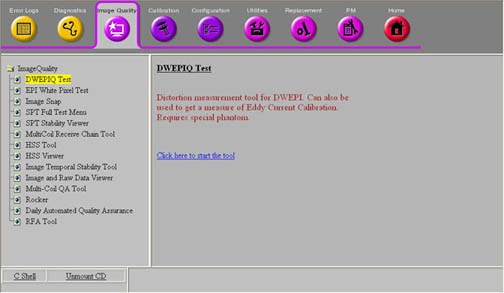
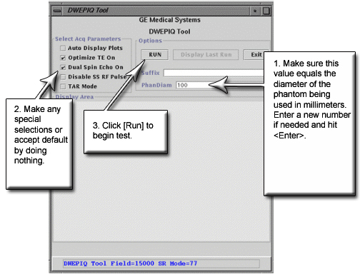

Illustration 3: Starting the DWEPIQ Tool

Click the Click here to start the tool link. The DWEPIQ Tool window appears as shown in Illustration 4.
Illustration 4: DWEPIQ Tool Window

| NOTE: | The DWEPIQ Tool window opens with the Select Acq Parameters defaulted to Optimize TE On and Dual Spin Echo On both selected. This is the mode that should normally be run. Optimize TE can be turned off as a troubleshooting step. Disabling Dual Spin Echo On and leaving Optimize TE On enabled almost always results in failures. Context sensitive help describing these functions is available while the cursor hovers over the text. |